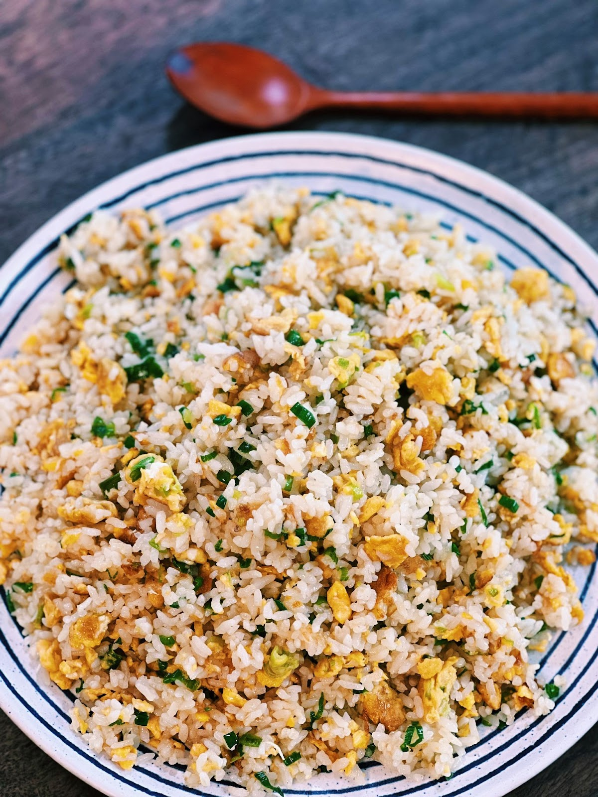

Egg Fried Rice

Description
If you have never tried the FAMOUS Din Tai Fung Egg Fried Rice, this is your sign to make it for dinner tonight!
Din Tai Fung Egg Fried Rice is super easy to make at home, with easy-to-find ingredients.
Ingredients
- 5 cups of Cold Cooked Rice
- 6 chopped Green Onion
- 5 Whole Eggs
- 1-1.5 tbsp of Sugar
- 1.5 tbsp of Chicken Powder
- 1 tbsp of Salt
- 2 tsp of White Pepper
- 1.5 tbsp of Soy Sauce
- 5 tbsp of Oil
Steps
- In a bowl, whisk 5 whole eggs with 1 tsp of white pepper and ½ tbsp of salt.
- Turn the heat up to medium-high and add in 5 tbsp of oil. Once the oil is hot, add white parts of the green onion and satue together for 1 minute.
- Add in the eggs, let it set for 30 seconds before breaking the egg apart.
- Add in cold cooked rice and sauté together for 1-2 minutes, separating the rice and ensuring the rice is coated in oil.
- Season with 1-1.5 tbsp of sugar, 1.5 tbsp of chicken powder or mushroom powder, 1 tsp of white pepper, 1.5 tbsp of Soy Sauce, and ½ tbsp of salt. Continue to fry for 1-2 minutes.
- Turn the heat up to high and add in green onion, sauté for 1 minute.
Back to main page